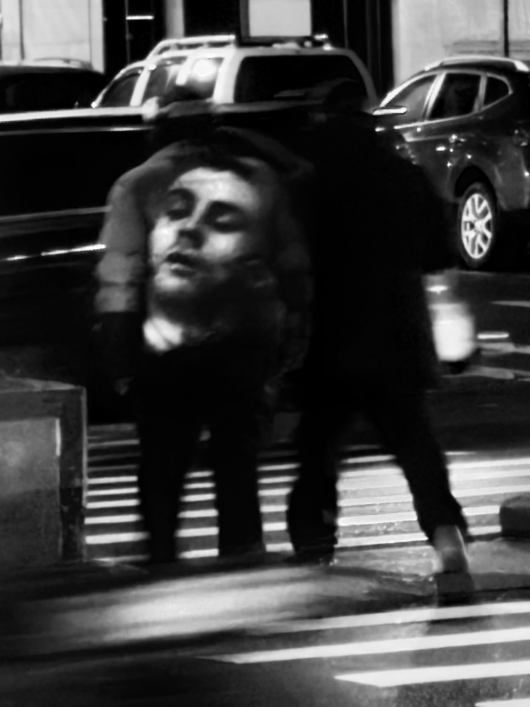
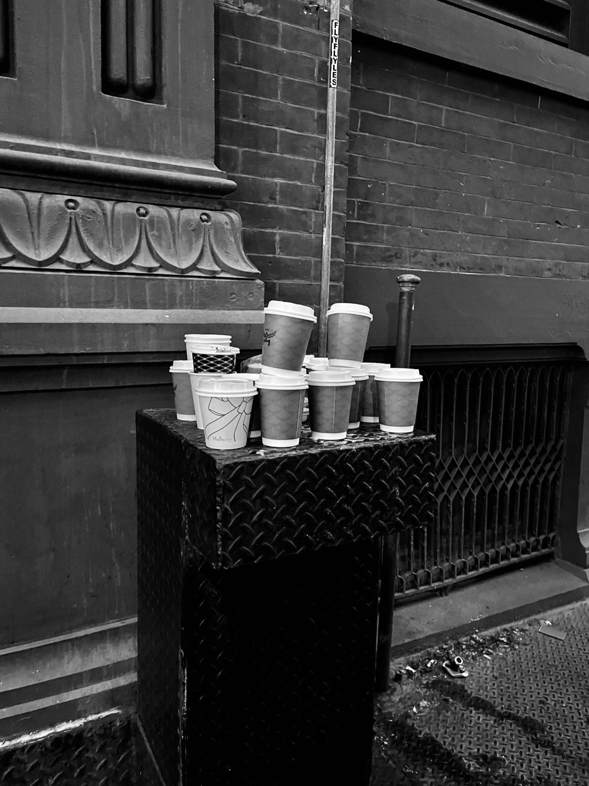
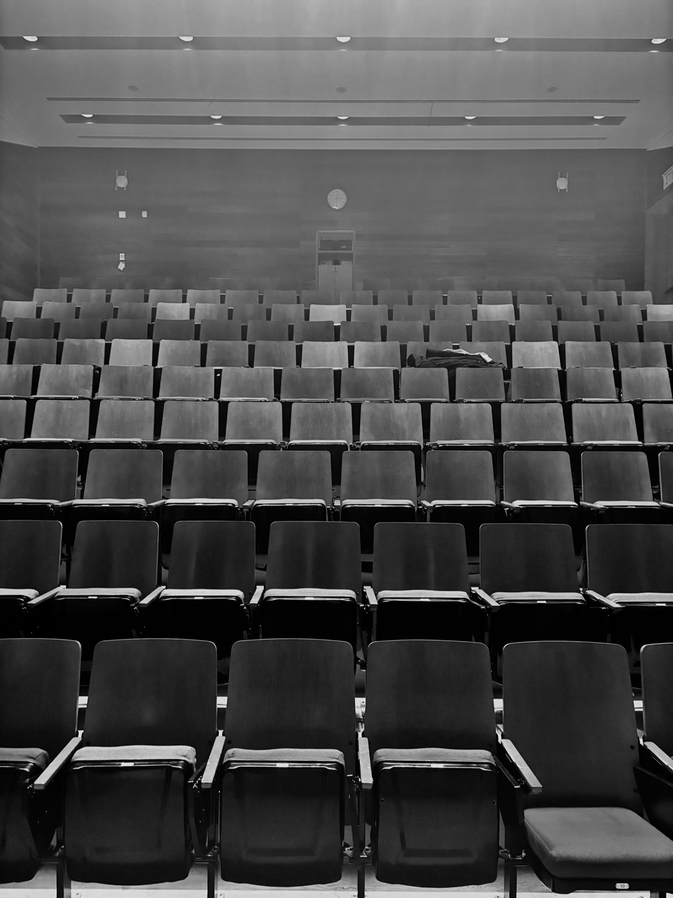
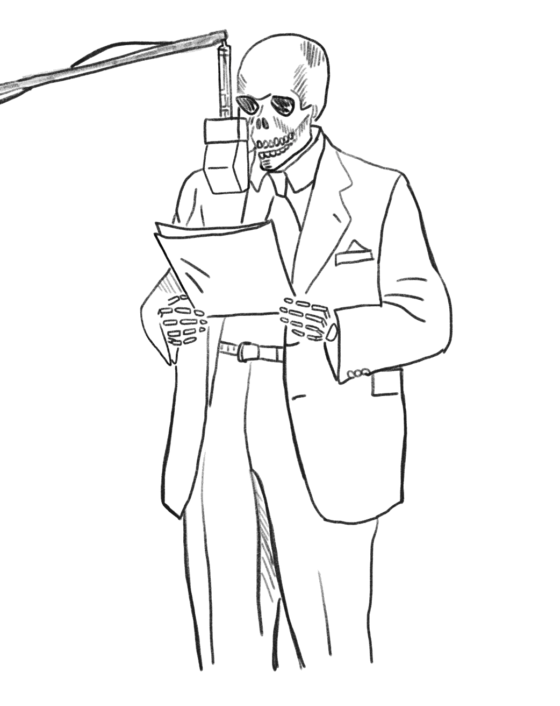

" (...) " and Meaning
Engage three distinct broadcasts.
0 → 1 → 2
Shape dynamics to articulate interplay.
Converge, disrupt, and resolve — let meaning emerge.
For Aleksander Bošković and Chris Caes, George E. Lewis, and Brian Greene
